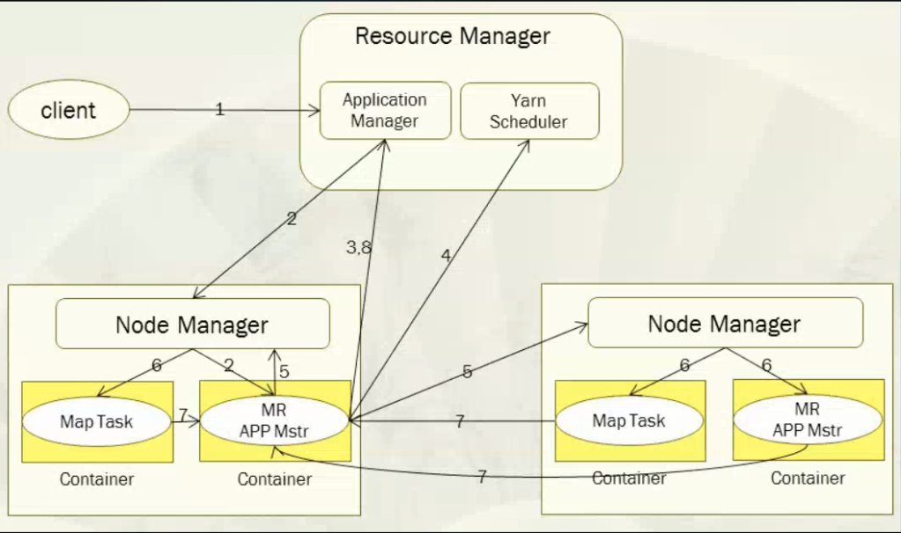

mapreduce快速入门
第一节：mapreduce概述
mapreduce：分布式并行离线计算框架，是一个分布式运算程序的编程框架，是用户开发“基于hadoop的数据分析应用”的核心框架；Mapreduce核心功能是将用户编写的业务逻辑代码和自带默认组件整合成一个完整的分布式运算程序，并发运行在一个hadoop集群上；
- 与HDFS解决问题的原理类似，HDFS是将大的文件切分成若干小文件，然后将它们分别存储到集群中各个主机中。
- 同样原理，mapreduce是将一个复杂的运算切分成若个子运算，然后将它们分别交给集群中各个主机，由各个主机并行运算。
1.1 mapreduce产生的背景
- 海量数据在单机上处理因为硬件资源限制，无法胜任。
- 而一旦将单机版程序扩展到集群来分布式运行，将极大增加程序的复杂度和开发难度。
- 引入mapreduce框架后，开发人员可以将绝大部分工作集中在业务逻辑的开发上，而将分布式计算中的复杂性交由框架来处理。
1.2 mapreduce编程模型
一种分布式计算模型。
MapReduce将这个并行计算过程抽象到两个函数。
- Map（映射）：对一些独立元素组成的列表的每一个元素进行指定的操作，可以高度并行。
- Reduce（化简 归约）：对一个列表的元素进行合并。
一个简单的MapReduce程序只需要指定map（）、reduce（）、input和output，剩下的事由框架完成。

1.3 Mapreduce的几个关键名词
Job ：用户的每一个计算请求称为一个作业。
Task：每一个作业，都需要拆分开了，交由多个主机来完成，拆分出来的执行单位就是任务。
Task又分为如下三种类型的任务：
- Map：负责map阶段的整个数据处理流程
- Reduce：负责reduce阶段的整个数据处理流程
- MRAppMaster：负责整个程序的过程调度及状态协调
1.4 mapreduce程序运行流程

具体流程说明：
一个mr程序启动的时候，最先启动的是MRAppMaster，MRAppMaster启动后根据本次job的描述信息，计算出需要的maptask实例数量，然后向集群申请机器启动相应数量的maptask进程
maptask进程启动之后，根据给定的数据切片范围进行数据处理，主体流程为：
- 利用客户指定的inputformat来获取RecordReader读取数据，形成输入KV对。
- 将输入KV（k是文件的行号，v是文件一行的数据）对传递给客户定义的map()方法，做逻辑运算，并将map()方法输出的KV对收集到缓存。
- 将缓存中的KV对按照K分区排序后不断溢写到磁盘文件
MRAppMaster监控到所有maptask进程任务完成之后，会根据客户指定的参数启动相应数量的reducetask进程，并告知reducetask进程要处理的数据范围（数据分区）
Reducetask进程启动之后，根据MRAppMaster告知的待处理数据所在位置，从若干台maptask运行所在机器上获取到若干个maptask输出结果文件，并在本地进行重新归并排序，然后按照相同key的KV为一个组，调用客户定义的reduce()方法进行逻辑运算，并收集运算输出的结果KV，然后调用客户指定的outputformat将结果数据输出到外部存储
第二节 maprecue实例开发
2.1 编程步骤
- 用户编写的程序分成三个部分：Mapper，Reducer，Driver(提交运行mr程序的客户端)
- Mapper的输入数据是KV对的形式（KV的类型可自定义）
- Mapper的输出数据是KV对的形式（KV的类型可自定义）
- Mapper中的业务逻辑写在map()方法中
- map()方法（maptask进程）对每一个
- Reducer的输入数据类型对应Mapper的输出数据类型，也是KV
- Reducer的业务逻辑写在reduce()方法中
- Reducetask进程对每一组相同k的
- 用户自定义的Mapper和Reducer都要继承各自的父类
- 整个程序需要一个Drvier来进行提交，提交的是一个描述了各种必要信息的job对象
2.2 经典的wordcount程序编写
需求：有一批文件（规模为TB级或者PB级），如何统计这些文件中所有单词出现次数
如有三个文件，文件名是qf_course.txt、qf_stu.txt 和 qf_teacher
qf_course.txt内容：
php java linux bigdata VR C C++ java web linux shell
qf_stu.txt内容：
tom jim lucy lily sally andy tom jim sally
qf_teacher内容：
jerry Lucy tom jim
方案
- 分别统计每个文件中单词出现次数 - map（）
- 累加不同文件中同一个单词出现次数 - reduce（）
实现代码
创建一个简单的java项目
添加hadoop client依赖的jar
编写代码
自定义一个mapper类
xxxxxxxxxximport java.io.IOException;import org.apache.hadoop.io.IntWritable;import org.apache.hadoop.io.LongWritable;import org.apache.hadoop.io.Text;import org.apache.hadoop.mapreduce.Mapper;/*** Maper里面的泛型的四个类型从左到右依次是：** LongWritable KEYIN: 默认情况下，是mr框架所读到的一行文本的起始偏移量，Long, 类似于行号但是在hadoop中有自己的更精简的序列化接口，所以不直接用Long，而用LongWritable* Text VALUEIN:默认情况下，是mr框架所读到的一行文本的内容，String，同上，用Text** Text KEYOUT：是用户自定义逻辑处理完成之后输出数据中的key，在此处是单词，String，同上，用Text* IntWritable VALUEOUT：是用户自定义逻辑处理完成之后输出数据中的value，在此处是单词次数，Integer，同上，用IntWritable*/public class WordcountMapper extends Mapper<LongWritable, Text, Text, IntWritable>{/*** map阶段的业务逻辑就写在自定义的map()方法中* maptask会对每一行输入数据调用一次我们自定义的map()方法*/protected void map(LongWritable key, Text value, Context context) throws IOException, InterruptedException {//将maptask传给我们的一行的文本内容先转换成StringString line = value.toString();//根据空格将这一行切分成单词String[] words = line.split(" ");/***将单词输出为<单词，1>*如<lily,1> <lucy,1> <c,1> <c++,1> <tom,1>*/for(String word:words){//将单词作为key，将次数1作为value，以便于后续的数据分发，可以根据单词分发，以便于相同单词会到相同的reduce taskcontext.write(new Text(word), new IntWritable(1));}}}自定义一个reduce类
xxxxxxxxxximport java.io.IOException;import org.apache.hadoop.io.IntWritable;import org.apache.hadoop.io.Text;import org.apache.hadoop.mapreduce.Reducer;/*** Reducer里面的泛型的四个类型从左到右依次是：* Text KEYIN: 对应mapper输出的KEYOUT* IntWritable VALUEIN: 对应mapper输出的VALUEOUT** KEYOUT, 是单词* VALUEOUT 是自定义reduce逻辑处理结果的输出数据类型，是总次数*/public class WordcountReducer extends Reducer<Text, IntWritable, Text, IntWritable>{/*** <tom,1>* <tom,1>* <linux,1>* <banana,1>* <banana,1>* <banana,1>* 入参key，是一组相同单词kv对的key* values是若干相同key的value集合* 如 <tom,[1,1]> <linux,[1]> <banana,[1,1,1]>*/protected void reduce(Text key, Iterable<IntWritable> values, Context context) throws IOException, InterruptedException {int count=0; //累加单词的出现的次数for(IntWritable value:values){count += value.get();}context.write(key, new IntWritable(count));}}编写一个Driver类
xxxxxxxxxximport org.apache.hadoop.conf.Configuration;import org.apache.hadoop.fs.Path;import org.apache.hadoop.io.IntWritable;import org.apache.hadoop.io.Text;import org.apache.hadoop.mapreduce.Job;import org.apache.hadoop.mapreduce.lib.input.FileInputFormat;import org.apache.hadoop.mapreduce.lib.output.FileOutputFormat;/*** 相当于一个yarn集群的客户端* 需要在此封装我们的mr程序的相关运行参数，指定jar包* 最后提交给yarn*/public class WordcountDriver {/*** 该类是运行在hadoop客户端的，main一运行，yarn客户端就启动起来了，与yarn服务器端通信* yarn服务器端负责启动mapreduce程序并使用WordcountMapper和WordcountReducer类*/public static void main(String[] args) throws Exception {if (args == null || args.length == 0) {//此代码需要两个输入参数 第一个参数支持要处理的源文件；第二个参数是处理结果的输出路径args = new String[2];args[0] = "hdfs://192.168.18.64:9000/wordcount/input/";//路径都是 hdfs系统的文件路径args[1] = "hdfs://192.168.18.64:9000/wordcount/output";}/*** 什么也不设置时，如果在安装了hadoop的机器上运行时，自动读取* /home/hadoop/app/hadoop-2.7.1/etc/hadoop/core-site.xml* 文件放入Configuration中*/Configuration conf = new Configuration();Job job = Job.getInstance(conf);//指定本程序的jar包所在的本地路径job.setJarByClass(WordcountDriver.class);//指定本业务job要使用的mapper/Reducer业务类job.setMapperClass(WordcountMapper.class);job.setReducerClass(WordcountReducer.class);//指定mapper输出数据的kv类型job.setMapOutputKeyClass(Text.class);job.setMapOutputValueClass(IntWritable.class);//指定最终输出的数据的kv类型job.setOutputKeyClass(Text.class);job.setOutputValueClass(IntWritable.class);//指定job的输入原始文件所在目录FileInputFormat.setInputPaths(job, new Path(args[0]));//指定job的输出结果所在目录FileOutputFormat.setOutputPath(job, new Path(args[1]));//将job中配置的相关参数，以及job所用的java类所在的jar包，提交给yarn去运行/*job.submit();*/boolean res = job.waitForCompletion(true);System.exit(res?0:1);}}
运行此程序的步骤
将此程序打包 名为wordcount.jar
第一步

第二步

第三步

上传wordcount.jar到名为min1机器的/home/hadoop目录下
在hdfs上创建文件夹“/wordcount/input”，并将三个文件（qf_course.txt、qf_stu.txt 和 qf_teacher）上传到hdfs的“/wordcount/input”目录下
xxxxxxxxxxhadoop fs mkdir -p /wordcount/inputhadoop fs –put qf_course.txt /wordcount/inputhadoop fs –put qf_stu.txt /wordcount/inputhadoop fs –put qf_teacher.txt /wordcount/input在/home/hadoop下启动wordcount.jar运行
xxxxxxxxxxhadoop jar wordcount.jar 包名.WordcountDriver /wordcount/input /wordcount/output在hadoop的/wordcount/output下生成两个文件 如下：
_SUCCESS //表示计算成功
part-r-00000 //处理结果文件
查看结果
xxxxxxxxxxhadoop fs -cat /wordcount/output/part-r-00000 #结果如下Hello 4ketty 2tom 2jim 1word 1
2.3 案例-统计最高温度
需求：求给定日期的最高温度
待处理数据内容：
201701082.6
201701066
2017020810
2017030816.33
2017060833.0
每一行的前8位是日期，从第8位往后是温度
代码
xxxxxxxxxximport java.io.IOException;import org.apache.hadoop.conf.Configuration;import org.apache.hadoop.fs.Path;import org.apache.hadoop.io.Text;import org.apache.hadoop.mapreduce.Job;import org.apache.hadoop.mapreduce.Mapper;import org.apache.hadoop.mapreduce.Reducer;import org.apache.hadoop.mapreduce.lib.input.FileInputFormat;import org.apache.hadoop.mapreduce.lib.output.FileOutputFormat;/*** 求最高温度* @author lyd** 数据：** 201701082.6* 201701066* 2017020810* 2017030816.33* 2017060833.0* 2017050126.6* 2017050320.9**/public class HighTem {public static class MyMapper extends Mapper<Object, Text, Text,Text>{protected void map(Object key, Text value,Context context)throws IOException, InterruptedException {String line = value.toString();String tmp = line.substring(8, line.length());context.write(new Text(""), new Text(tmp));/**"" 201701082.6"" 201701066"" 2017020810"" 2017030816.33"" 2017060833.0"" 2017050126.6"" 2017050320.9*/}}/*** 自定义reducer类* @author lyd**/public static class MyReducer extends Reducer<Text, Text, Text, Text>{protected void reduce(Text key, Iterable<Text> value,Context context)throws IOException, InterruptedException {/*** "" list(2.6,6,10)*/double max = Double.MIN_VALUE;//获取最大值for (Text t : value) {if(max < Double.parseDouble(t.toString())){max = Double.parseDouble(t.toString());}}context.write(new Text(max+""), new Text(""));}}public static void main(String[] args) {try {//获取配置对象Configuration conf = new Configuration();//创建jobJob job = new Job(conf, "HighTemp");//为job设置运行主类job.setJarByClass(HighTem.class);//设置map阶段的属性job.setMapperClass(MyMapper.class);FileInputFormat.addInputPath(job, new Path(args[0]));//设置reduce阶段的属性job.setReducerClass(MyReducer.class);job.setOutputKeyClass(Text.class);job.setOutputValueClass(Text.class);FileOutputFormat.setOutputPath(job, new Path(args[1]));//提交运行作业job 并打印信息int isok = job.waitForCompletion(true)?0:1;//退出jobSystem.exit(isok);} catch (IOException | ClassNotFoundException | InterruptedException e) {e.printStackTrace();}}}
2.4 案例-求平均成绩
待处理数据内容：
名字 语文 数学 英语 lh 92 68 70 zyt 94 88 75 ls 96 78 78 hgw 90 70 56 yxx 80 88 73 hz 90 98 70 xyd 60 88 73 hj 90 58 70 cs 50 58 11
算每个人的平均成绩？
xxxxxxxxxximport java.io.IOException;import org.apache.hadoop.conf.Configuration;import org.apache.hadoop.fs.Path;import org.apache.hadoop.io.LongWritable;import org.apache.hadoop.io.Text;import org.apache.hadoop.mapreduce.Job;import org.apache.hadoop.mapreduce.Mapper;import org.apache.hadoop.mapreduce.lib.input.FileInputFormat;import org.apache.hadoop.mapreduce.lib.output.FileOutputFormat;public class AvgDemo {//自定义myMapperpublic static class MyMapper extends Mapper<LongWritable, Text, Text, Text>{//只在map方法运行之前执行一次。(仅执行一次)protected void setup(Context context)throws IOException, InterruptedException {}Text k = new Text();Text v = new Text();protected void map(LongWritable key, Text value,Context context)throws IOException, InterruptedException {String line = value.toString();String [] scores = line.split("\t");String name = scores[0];String chinese = scores[1];String math = scores[2];String english = scores[3];double avg = (Integer.parseInt(chinese) + Integer.parseInt(math) +Integer.parseInt(english)) / ((scores.length-1)*1.0);k.set(name);v.set(avg+"");context.write(k,v);}//map方法运行完后执行一次(仅执行一次)protected void cleanup(Context context)throws IOException, InterruptedException {}}/*//自定义myReducerpublic static class MyReducer extends Reducer<Text, Text, Text, Text>{//在reduce方法执行之前执行一次。(仅一次)@Overrideprotected void setup(Context context)throws IOException, InterruptedException {}@Overrideprotected void reduce(Text key, Iterable<Text> value,Context context)throws IOException, InterruptedException {}//在reduce方法执行之后执行一次。(仅一次)@Overrideprotected void cleanup(Context context)throws IOException, InterruptedException {}}*//*** job的驱动方法* @param args*/public static void main(String[] args) {try {//1、获取ConfConfiguration conf = new Configuration();//2、创建jobJob job = Job.getInstance(conf, "model01");//3、设置运行job的classjob.setJarByClass(AvgDemo.class);//4、设置map相关属性job.setMapperClass(MyMapper.class);job.setMapOutputKeyClass(Text.class);job.setMapOutputValueClass(Text.class);FileInputFormat.addInputPath(job, new Path(args[0]));//5、设置reduce相关属性/*job.setReducerClass(MyReducer.class);job.setOutputKeyClass(Text.class);job.setOutputValueClass(Text.class);*/FileOutputFormat.setOutputPath(job, new Path(args[1]));//6、提交运行jobint isok = job.waitForCompletion(true) ? 0 : 1;//退出System.exit(isok);} catch (IOException | ClassNotFoundException | InterruptedException e) {e.printStackTrace();}}}求每个学科的平均成绩
xxxxxxxxxximport java.io.IOException;import org.apache.hadoop.conf.Configuration;import org.apache.hadoop.fs.Path;import org.apache.hadoop.io.LongWritable;import org.apache.hadoop.io.Text;import org.apache.hadoop.mapreduce.Job;import org.apache.hadoop.mapreduce.Mapper;import org.apache.hadoop.mapreduce.Reducer;import org.apache.hadoop.mapreduce.lib.input.FileInputFormat;import org.apache.hadoop.mapreduce.lib.output.FileOutputFormat;/**每个学科的平均成绩？语文 数学 英语76 89 90* @author lyd**/public class AvgDemo02 {//自定义myMapperpublic static class MyMapper extends Mapper<LongWritable, Text, Text, Text>{//只在map方法运行之前执行一次。(仅执行一次)protected void setup(Context context)throws IOException, InterruptedException {}Text k = new Text();Text v = new Text();protected void map(LongWritable key, Text value,Context context)throws IOException, InterruptedException {String line = value.toString();String scores [] = line.split("\t");String chinese = scores[1];String math = scores[2];String english = scores[3];k.set("_");v.set(chinese+"_"+math+"_"+english);context.write(k, v);}//map方法运行完后执行一次(仅执行一次)protected void cleanup(Context context)throws IOException, InterruptedException {}}//自定义myReducerpublic static class MyReducer extends Reducer<Text, Text, Text, Text>{//在reduce方法执行之前执行一次。(仅一次)protected void setup(Context context)throws IOException, InterruptedException {context.write(new Text("语文"+"\t"+"数学"+"\t"+"英语"), new Text(""));}protected void reduce(Text key, Iterable<Text> value,Context context)throws IOException, InterruptedException {int counter = 0;double c = 0;double m = 0;double e = 0;for (Text t : value) {String scores [] = t.toString().split("_");c += Double.parseDouble(scores[0]);m += Double.parseDouble(scores[1]);e += Double.parseDouble(scores[2]);counter ++;}context.write(new Text(c/counter+"\t"+m/counter+"\t"+e/counter), new Text(""));}//在reduce方法执行之后执行一次。(仅一次)protected void cleanup(Context context)throws IOException, InterruptedException {}}/*** job的驱动方法* @param args*/public static void main(String[] args) {try {//1、获取ConfConfiguration conf = new Configuration();//2、创建jobJob job = Job.getInstance(conf, "model01");//3、设置运行job的classjob.setJarByClass(AvgDemo02.class);//4、设置map相关属性job.setMapperClass(MyMapper.class);job.setMapOutputKeyClass(Text.class);job.setMapOutputValueClass(Text.class);FileInputFormat.addInputPath(job, new Path(args[0]));//5、设置reduce相关属性job.setReducerClass(MyReducer.class);job.setOutputKeyClass(Text.class);job.setOutputValueClass(Text.class);FileOutputFormat.setOutputPath(job, new Path(args[1]));//6、提交运行jobint isok = job.waitForCompletion(true) ? 0 : 1;//退出System.exit(isok);} catch (IOException | ClassNotFoundException | InterruptedException e) {e.printStackTrace();}}}总平均分每个分数段的人数以及百分比
如：
分数段 人数 占总数的百分比
<60 1 8% 60-70 2 16% 70-80 5 33% 80-90 2 16% 90-100 3 28%
xxxxxxxxxximport java.io.IOException;import java.util.ArrayList;import java.util.List;import org.apache.hadoop.conf.Configuration;import org.apache.hadoop.fs.Path;import org.apache.hadoop.io.LongWritable;import org.apache.hadoop.io.Text;import org.apache.hadoop.mapreduce.Job;import org.apache.hadoop.mapreduce.Mapper;import org.apache.hadoop.mapreduce.Reducer;import org.apache.hadoop.mapreduce.lib.input.FileInputFormat;import org.apache.hadoop.mapreduce.lib.output.FileOutputFormat;/**<60 1 8%60-70 2 %1670-80 5 33%80-90 2 16%90-100 3 28%* @author lyd**/public class AvgDemo03 {//static int counter = 0;//自定义myMapperpublic static class MyMapper extends Mapper<LongWritable, Text, Text, Text>{//只在map方法运行之前执行一次。(仅执行一次)protected void setup(Context context)throws IOException, InterruptedException {}Text k = new Text();Text v = new Text();protected void map(LongWritable key, Text value,Context context)throws IOException, InterruptedException {String line = value.toString();String scores [] = line.split("\t");String chinese = scores[1];String math = scores[2];String english = scores[3];double avg = (Double.parseDouble(chinese) + Double.parseDouble(math)+ Double.parseDouble(english))/(scores.length-1);//判断if(avg < 60){k.set("<60");v.set("1");} else if(avg >= 60 && avg < 70){k.set("60-70");v.set("1");} else if(avg >= 70 && avg < 80){k.set("70-80");v.set("1");} else if(avg >= 80 && avg < 90){k.set("80-90");v.set("1");} else if(avg >= 90 && avg <= 100){k.set("90-100");v.set("1");}//context.getConfiguration().setInt("counter", counter);context.write(k, v);}//map方法运行完后执行一次(仅执行一次)protected void cleanup(Context context)throws IOException, InterruptedException {}}//自定义myReducerpublic static class MyReducer extends Reducer<Text, Text, Text, Text>{//在reduce方法执行之前执行一次。(仅一次)protected void setup(Context context)throws IOException, InterruptedException {context.write(new Text("分数段"), new Text("人数"+"\t"+"百分比"));}int totalPerson = 0;/*int l6 = 0;int g6l7 = 0;int g7l8 = 0;int g8l9 = 0;int g9l10 = 0;*/List<String> li = new ArrayList<String>();protected void reduce(Text key, Iterable<Text> value,Context context)throws IOException, InterruptedException {/*** <60 list(1,1)*/int i = 0;for (Text t : value) {if(key.toString().equals("<60")){//l6 ++;i ++ ;} else if (key.toString().equals("60-70")){//g6l7 ++;i ++ ;} else if (key.toString().equals("70-80")){//g7l8 ++ ;i ++ ;} else if (key.toString().equals("80-90")){//g8l9 ++;i ++ ;} else if (key.toString().equals("90-100")){//g9l10 ++;i ++ ;}totalPerson ++ ;}li.add(key.toString()+"_"+i);//context.getConfiguration().get("counter");}//在reduce方法执行之后执行一次。(仅一次)protected void cleanup(Context context)throws IOException, InterruptedException {for (String s : li) {String l [] = s.split("_");context.write(new Text(l[0]), new Text(l[1]+"\t"+Double.parseDouble(l[1])/totalPerson*100+"%"));}}}/*** job的驱动方法* @param args*/public static void main(String[] args) {try {//1、获取ConfConfiguration conf = new Configuration();//2、创建jobJob job = Job.getInstance(conf, "model01");//3、设置运行job的classjob.setJarByClass(AvgDemo03.class);//4、设置map相关属性job.setMapperClass(MyMapper.class);job.setMapOutputKeyClass(Text.class);job.setMapOutputValueClass(Text.class);FileInputFormat.addInputPath(job, new Path(args[0]));//5、设置reduce相关属性job.setReducerClass(MyReducer.class);job.setOutputKeyClass(Text.class);job.setOutputValueClass(Text.class);FileOutputFormat.setOutputPath(job, new Path(args[1]));//6、提交运行jobint isok = job.waitForCompletion(true) ? 0 : 1;//退出System.exit(isok);} catch (IOException | ClassNotFoundException | InterruptedException e) {e.printStackTrace();}}}将三门课程中任意一门不及格的学生过滤出来
xxxxxxxxxximport java.io.IOException;import java.util.ArrayList;import java.util.List;import org.apache.hadoop.conf.Configuration;import org.apache.hadoop.fs.Path;import org.apache.hadoop.io.LongWritable;import org.apache.hadoop.io.Text;import org.apache.hadoop.mapreduce.Job;import org.apache.hadoop.mapreduce.Mapper;import org.apache.hadoop.mapreduce.Reducer;import org.apache.hadoop.mapreduce.lib.input.FileInputFormat;import org.apache.hadoop.mapreduce.lib.output.FileOutputFormat;/**将三门课程中任意一门不及格的学生过滤出来？* @author lyd**/public class GrepDemo {//static int counter = 0;//自定义myMapperpublic static class MyMapper extends Mapper<LongWritable, Text, Text, Text>{//只在map方法运行之前执行一次。(仅执行一次)protected void setup(Context context)throws IOException, InterruptedException {}Text k = new Text();Text v = new Text();protected void map(LongWritable key, Text value,Context context)throws IOException, InterruptedException {String line = value.toString();String scores [] = line.split("\t");String chinese = scores[1];String math = scores[2];String english = scores[3];if(Double.parseDouble(chinese) < 60 || Double.parseDouble(math) < 60 || Double.parseDouble(english) < 60){context.write(value, new Text(""));}}//map方法运行完后执行一次(仅执行一次)protected void cleanup(Context context)throws IOException, InterruptedException {}}/*** job的驱动方法* @param args*/public static void main(String[] args) {try {//1、获取ConfConfiguration conf = new Configuration();//2、创建jobJob job = Job.getInstance(conf, "model01");//3、设置运行job的classjob.setJarByClass(GrepDemo.class);//4、设置map相关属性job.setMapperClass(MyMapper.class);job.setMapOutputKeyClass(Text.class);job.setMapOutputValueClass(Text.class);FileInputFormat.addInputPath(job, new Path(args[0]));//5、设置reduce相关属性FileOutputFormat.setOutputPath(job, new Path(args[1]));//6、提交运行jobint isok = job.waitForCompletion(true) ? 0 : 1;//退出System.exit(isok);} catch (IOException | ClassNotFoundException | InterruptedException e) {e.printStackTrace();}}}统计成材率？
每一门成绩都大于60分的人数/总人数
xxxxxxxxxximport java.io.IOException;import java.util.ArrayList;import java.util.List;import org.apache.hadoop.conf.Configuration;import org.apache.hadoop.fs.FileSystem;import org.apache.hadoop.fs.Path;import org.apache.hadoop.io.LongWritable;import org.apache.hadoop.io.Text;import org.apache.hadoop.mapreduce.Job;import org.apache.hadoop.mapreduce.Mapper;import org.apache.hadoop.mapreduce.Reducer;import org.apache.hadoop.mapreduce.lib.input.FileInputFormat;import org.apache.hadoop.mapreduce.lib.output.FileOutputFormat;/**统计成材率？每一门成绩都大于60分的人数/总人数成材率 88%留级率 12%* @author lyd**/public class SuccessDemo {//static int counter = 0;//自定义myMapperpublic static class MyMapper extends Mapper<LongWritable, Text, Text, Text>{//只在map方法运行之前执行一次。(仅执行一次)protected void setup(Context context)throws IOException, InterruptedException {}protected void map(LongWritable key, Text value,Context context)throws IOException, InterruptedException {String line = value.toString();String scores [] = line.split("\t");String chinese = scores[1];String math = scores[2];String english = scores[3];if(Double.parseDouble(chinese) >= 60 && Double.parseDouble(math) >= 60 && Double.parseDouble(english) >= 60){context.write(new Text("up"), new Text("1"));} else {context.write(new Text("down"), new Text("1"));}}//map方法运行完后执行一次(仅执行一次)protected void cleanup(Context context)throws IOException, InterruptedException {}}//自定义myReducerpublic static class MyReducer extends Reducer<Text, Text, Text, Text>{//在reduce方法执行之前执行一次。(仅一次)protected void setup(Context context)throws IOException, InterruptedException {context.write(new Text("分数段"), new Text("人数"+"\t"+"百分比"));}int totalPerson = 0;int u = 0;protected void reduce(Text key, Iterable<Text> value,Context context)throws IOException, InterruptedException {for (Text t : value) {if(key.toString().equals("up")){u ++;}totalPerson ++;}}//在reduce方法执行之后执行一次。(仅一次)protected void cleanup(Context context)throws IOException, InterruptedException {context.write(new Text("成才率"), new Text(u*100.0/totalPerson+"%"));context.write(new Text("留级率"), new Text((totalPerson-u)*100.0/totalPerson+"%"));}}/*** job的驱动方法* @param args*/public static void main(String[] args) {try {//1、获取ConfConfiguration conf = new Configuration();conf.set("fs.defaultFS", "hdfs://hadoop01:9000");//2、创建jobJob job = Job.getInstance(conf, "model01");//3、设置运行job的classjob.setJarByClass(SuccessDemo.class);//4、设置map相关属性job.setMapperClass(MyMapper.class);job.setMapOutputKeyClass(Text.class);job.setMapOutputValueClass(Text.class);FileInputFormat.addInputPath(job, new Path(args[0]));//5、设置reduce相关属性job.setReducerClass(MyReducer.class);job.setOutputKeyClass(Text.class);job.setOutputValueClass(Text.class);//判断输出目录是否存在，若存在则删除FileSystem fs = FileSystem.get(conf);if(fs.exists(new Path(args[1]))){fs.delete(new Path(args[2]), true);}FileOutputFormat.setOutputPath(job, new Path(args[1]));//6、提交运行jobint isok = job.waitForCompletion(true) ? 0 : 1;//退出System.exit(isok);} catch (IOException | ClassNotFoundException | InterruptedException e) {e.printStackTrace();}}}
第三节：一些必要知识
3.1 hadoop集群各主机时间要一致
xxxxxxxxxx时间同步：1、date -s ""2、基于ntp服务的时间同步 (c/s)3、将配置好的ntp用脚本做定时任务rpm -q ntp 查询是否安装ntp配置：选择作为ntpserver的服务器进行配置vi /etc/ntp.conf启动停止命令：service ntpd status/start/stop/restart在client端执行：ntpdate hadoop01注意：ntpserver需要启动，而client不能启动配置文件中/etc/ntp.conf server 127.127.1.0不要在ntpserver服务器上来同步时间*/1 * * * * /usr/sbin/ntpdate hadoop01 >> /dev/null3.2 yarn的聚合日志
yarn的聚合日志：job运行的详细记录。 需要启动jobhistoryserver 需要配置yarn-site.xml
3.3 awk（sed） 和 mr